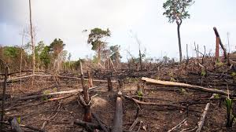
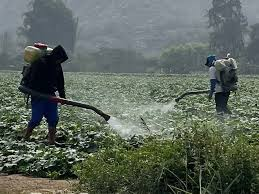
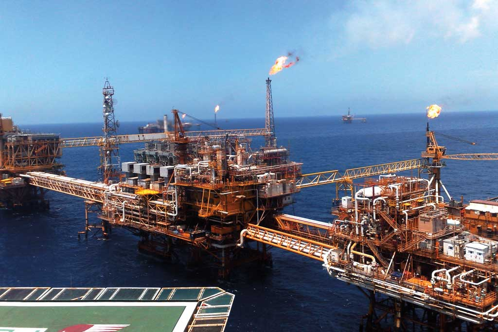
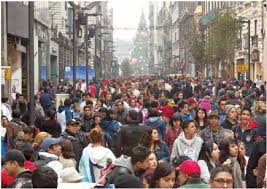
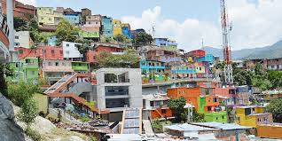
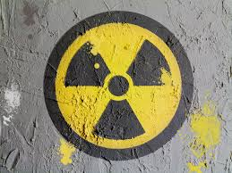

Causas y Consecuencias
Causas de la contaminacion ambiental
Existen diversas causas que provocan la contaminación ambiental, relacionadas con diferentes factores, como el crecimiento demográfico, una mayor demanda de alimentos o la necesidad de construir nuevas zonas urbanas. A continuación, presentamos las principales causas de la contaminación ambiental.
Principales Causas
1-Actividad humana

La actividad humana es una de las principales causas de la contaminación ambiental. El desarrollo tecnológico es notorio y ha logrado importantes avances para mejorar la calidad de vida. Si embargo, ha tenido una significativa repercusión negativa en el medio ambiente. Por ejemplo:
El continuo desarrollo industrial y sus actividades generan un gran porcentaje de desechos contaminantes que afectan la calidad del aire, el suelo y el agua.
El uso excesivo de vehículos a gasolina o diésel incentiva el uso de combustibles fósiles contaminantes.
Las continuas emisiones de gases contaminantes que derivan de la actividad industrial para la producción de bienes o servicios.
La producción y el uso indiscriminado del plástico con diversos fines.
El incremento de la producción de residuos no biodegradables.
El crecimiento demográfico y la falta de planificación urbanística ha incentivado la deforestación de bosques para la construcción de viviendas o zonas residenciales.
La necesidad de incrementar la extracción de recursos naturales para diversos usos.
El aumento de la cría de ganado y con esto, el aumento de gases contaminantes.
2-Deforestacion
La deforestación o tala indiscriminada de árboles es una de las principales causas de la contaminación ambiental. Esta actividad ha reducido en porcentajes importantes los bosques y selvas de la Tierra, incluso, ya se cuenta la extinción de varios de estos espacios naturales.
Los árboles y las plantas tienen la función de purificar el aire. Sin ellos, la contaminación del aire se intensifica, y por ende, la aparición de enfermedades respiratorias. Además, sus raíces protegen los suelos del impacto directo de la lluvia, evitan su erosión y reducen la posibilidad de que se formen inundaciones.
La necesidad de acrecentar los espacios para la actividad agrícola y para construir y ampliar los espacios urbanos, así como el uso de la madera promocionan y estimulan la deforestación sin medida.
3-Uso de productos químicos y pesticidas
El sector agropecuario es uno de los que hace mayor uso de productos químicos, pesticidas, plaguicidas y herbicidas como parte de los métodos de cultivo y cuidado que implican las actividades de este sector.
Cierto es que los agricultores deben hacer uso de tales productos para proteger los cultivos de frutas y vegetales. Sin embargo, son altamente contaminantes y afectan la calidad de los suelos y del agua.
Esta situación se agrava también por causa del crecimiento demográfico y la necesidad de producir mayor cantidad de alimentos.
4-Desechos industriales y domésticos
Las actividades industriales producen gran cantidad de desechos tóxicos para el medio ambiente como gases, químicos, solventes, entre otros. Muchos son expulsados de manera directa e ilegal al agua o al aire, contaminándolos y provocando daños ambientales de gran magnitud.
Igual ocurre con una considerable cantidad de productos de uso doméstico como detergentes, solventes o aceites, productos altamente contaminantes. Por ello se sugiere sustituirlos por otros de características biodegradables y menos perjudiciales para el medio ambiente.
5-Combustibles fósiles

Los combustibles fósiles son un relevante factor de contaminación. Desde los métodos de extracción como de refinamiento y uso impactan de manera negativa el medio ambiente. Entre los recursos más explotados de la naturaleza para generar combustibles están el petróleo, el gas natural y el carbón, que son altamente contaminantes.
En la actualidad se han desarrollado diversas tecnologías a fin de reducir el uso de esos combustibles. Por ejemplo, en el área automotriz, ya contamos con vehículos eléctricos e híbridos.
6-Producción y acumulación de basura

Actualmente, los índices de producción de basura son muy altos y la mayoría deriva del uso indiscriminado del plástico, así como de otros productos que no son biodegradables.
La contaminación se da no solamente con la producción y acumulación de basura, sino por la falta de procesos de reciclaje eficientes. De hecho, la quema de basura es una actividad habitual en algunos países y regiones. Esta actividad emite al aire o deposita en el suelo muchos productos tóxicos, sobre todo cuando se quema todo en conjunto.
Para reducir su efecto se recomienda seleccionar la basura por tipos de materiales: vidrio, plástico, aluminio, cartón o papel. Así puede ser tratada o reutilizada a través de los procesos de reciclaje.
7-Crecimiento demográfico
El continuo crecimiento demográfico exige respuestas rápidas para que las personas puedan contar con los bienes y servicios mínimos para cubrir sus necesidades básicas.
Para ello, es necesario extraer mayores recursos naturales, intensificar las actividades agrícolas, ampliar los espacios urbanos, los centros industriales y las vías de comunicación. Estas acciones contribuyen al deterioro del medio ambiente.
8-Desarrollo industrial
El desarrollo industrial le ha valido a la humanidad, especialmente, a los países industrializados a tener una continua prosperidad económica. Incluso, ha hecho posible crear o mejorar diversos bienes, productos o servicios.
Sin embargo, el desarrollo industrial trajo consigo múltiples daños ambientales como:
Mayor explotación de los recursos naturales.
Desequilibrio medioambiental al extraer tantos recursos naturales y deforestar grandes espacios como bosques y selvas para construir fábricas o empresas de mayor tamaño.
Intensificación de la actividad minera.
Menos espacios para el cultivo debido a la expansión industrial.
Disminución del agua subterránea, ya que se sustrae con diversos fines, lo que afecta la calidad de los suelos.
Además, la intensa actividad industrial genera residuos y desechos contaminantes como gases tóxicos, cenizas o solventes que tienen un impacto negativo en el medio ambiente.
9-Falta de planificación urbanística
Las zonas urbanas o rurales que crecen de forma exponencial y sin planificación, experimentan diversos problemas que afectan la calidad del medio ambiente de la siguiente manera:
La construcción de viviendas en zonas de riesgo o que no son aptas para ello y propician su deforestación.
Un sistema deficiente de recolección de basura, cuya acumulación genera problemas en los sistemas de alcantarillado y propicia la plaga de animales e insectos que generan diversos problemas de salud.
Acumulación de gases tóxicos que derivan del tránsito vehicular como, el dióxido de carbono.
Acumulación de aguas residuales.
10-La radiación
El continuo deterioro de la capa de ozono, una capa protectora natural contra la radiación solar, permite el mayor paso de rayos ultravioleta. Esta radiación tiene efectos negativos en la calidad de vida de los seres vivos.
También se debe mencionar la radiación electromagnética. Esta radiación la encontramos en los equipos electrónicos como teléfonos móviles, computadoras portátiles, tabletas, entre otros. Estas radiaciones pueden perturbar los hábitos reproductivos de los animales.